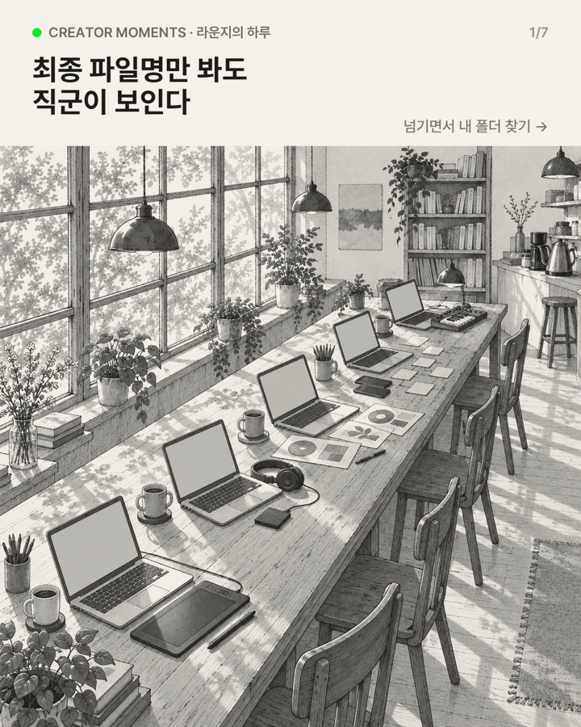
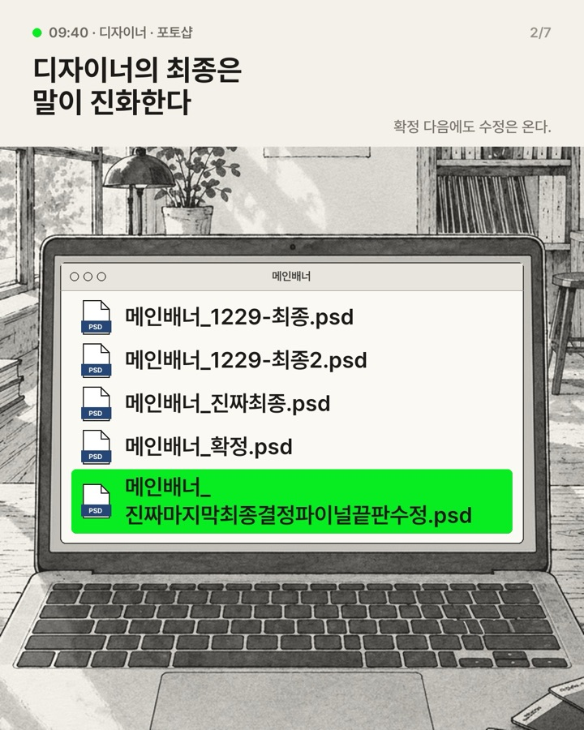
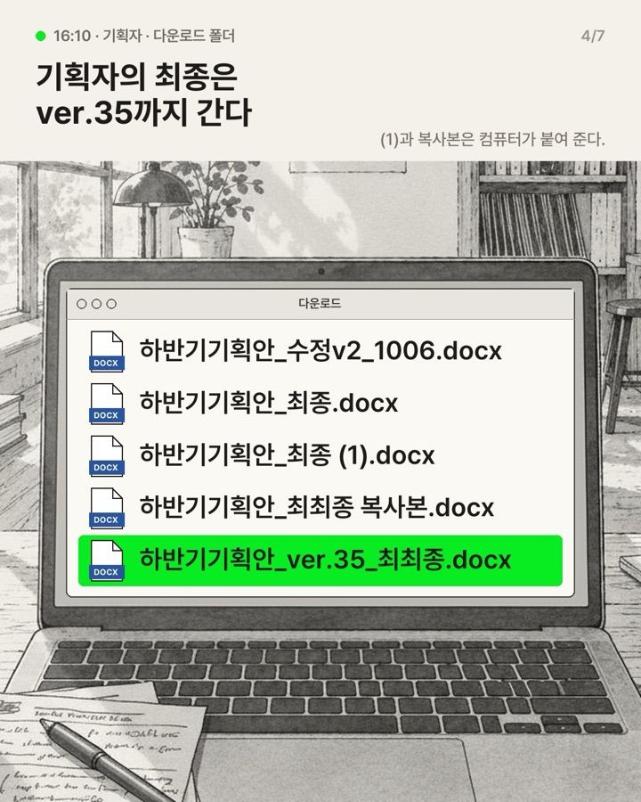
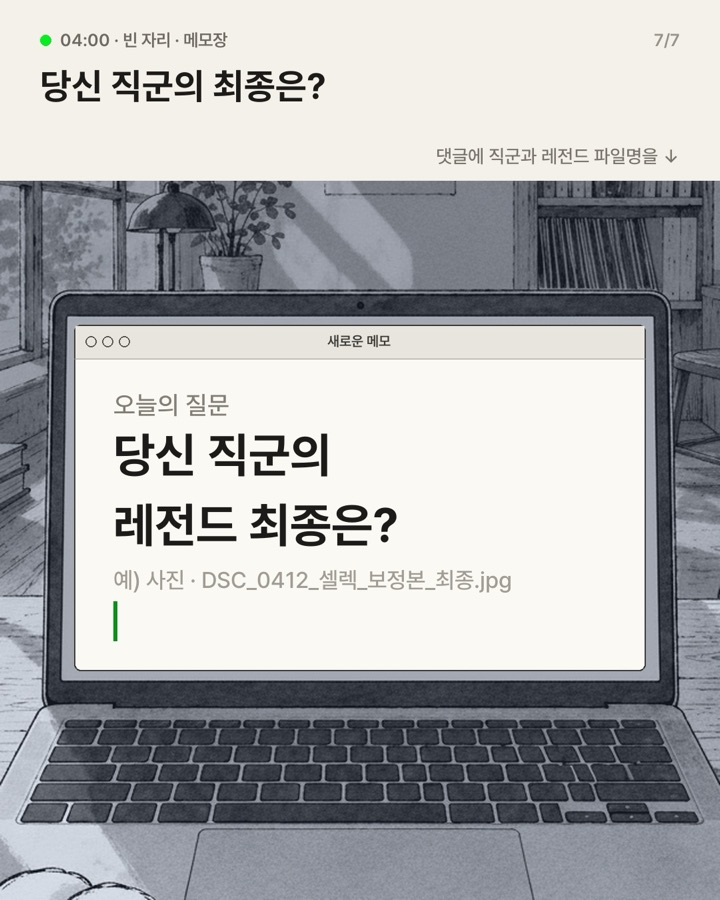

01
사장님도, 사람도 아니어도 된다
'사장'은 위계로 읽혀 남의 크레딧을 세우는 계정과 어긋납니다. 사람 얼굴은 그 사람이 떠나면 계정이 흔들리고(충주시 97.5만→75.1만), 사람처럼 보이는 AI 인물은 창작자 반감이 큽니다.
크리에이터클럽 인스타는 24시간 열려 있는 창작자 라운지입니다. 우리는 그곳을 지키는 지기의 눈으로, 그 시간에 거기 있는 창작자를 보여 줍니다.
지기는 화면에 나오지 않습니다. 주인공은 늘 화면 속 창작자이고, 보는 사람은 지기의 자리에 앉습니다.

'사장'은 위계로 읽혀 남의 크레딧을 세우는 계정과 어긋납니다. 사람 얼굴은 그 사람이 떠나면 계정이 흔들리고(충주시 97.5만→75.1만), 사람처럼 보이는 AI 인물은 창작자 반감이 큽니다.
문지기·출입증은 거르는 존재입니다. 창작자가 자유롭게 드나들며 고민하고 토로하는 24시간 라운지에는, 불을 켜 두고 묵묵히 몰입할 환경을 만드는 존재 하나면 됩니다.
지기의 정체는 정하지 않습니다. 정하면 설명하게 되고, 설명하면 세계관이 무거워집니다. 손이나 소매만 살짝 보이고, 사람인지 동물인지는 댓글의 추측으로 남깁니다.
지기는 화면에 나오지 않습니다. 화면 속 창작자가 카메라를 봅니다.
컵을 쥔 큰 손, 소매 끝, 담요 자락. 없어도 됩니다.
짧고 당당하게, 과한 친절 없이. 07:12 창가. 또 왔다. 컵은 세 번째.
장면만 있으면 혼자 찍는 모노드라마가 됩니다. 매 편 보는 사람이 가져갈 공감·정보·질문 하나를 싣습니다.
| 시간 | 빛 | 주로 오는 사람 | 지기가 하는 일 |
|---|---|---|---|
| 아침 06–11 | 창가로 스미는 낮은 햇빛 | 글 작가 · 일러스트레이터 | 커피를 올려 두고 멀찍이 컵을 닦는다 |
| 낮 12–17 | 밝고 평평한 빛 | 디자이너 · 사진가 · 영상 편집자 | 긴 테이블을 비워 둔다 |
| 저녁 18–22 | 텅스텐 램프 | 밴드 · 뮤지션 | 무대 쪽 조명을 살짝 돌려 준다 |
| 밤 22–02 | 스탠드 하나 | 작곡가 · 프로듀서 | 카운터 끝에서 책을 읽는다 |
| 새벽 02–06 | 창에 번지는 푸른 기운 | 댄서 · 공연 끝낸 사람 | 따뜻한 한 그릇을 내려놓고 물러선다 |
넘길 이유를 띠 한 줄로 줍니다.

그림은 라운지의 시간이 흐르며 손님이 바뀝니다.

가장 아는 웃음으로 붙잡고, 처음 보는 웃음으로 끝까지 넘기게.

깜빡이는 커서로 댓글을 엽니다.
예시: EP.02 「최종 파일명만 봐도 직군이 보인다」 7장 중 4장. 화면 속 파일명 25줄은 실제 게시물·업계 글·프로그램 직접 시험으로 근거를 붙였습니다.
EP.02 파일명 편이 최종본 상태. 컨펌 뒤 게시.
Higgsfield 유료 플랜(무료는 상업 이용 불가) 또는 fal 종량제.
일러스트 이미지는 인스타 표시 의무 대상이 아님. 자발적으로 켤지 결정.
어느 시간대·직군부터 실제 멤버로 채울지.
24시간 열려 있는 한 공간이 브랜드가 된 사례. 같은 방, 같은 창가를 반복하니 설명 없이 세계가 이해됩니다.
묻는 사람은 안 보이고 답하는 사람만 보이는 형식. 지기의 시선과 같은 구조이고, 주인공은 늘 실제 사람입니다.
크레딧을 세우는 계정의 정석. 캡션마다 만든 사람 이름과 계정을 걸고, 브랜드는 큐레이터로만 남습니다.